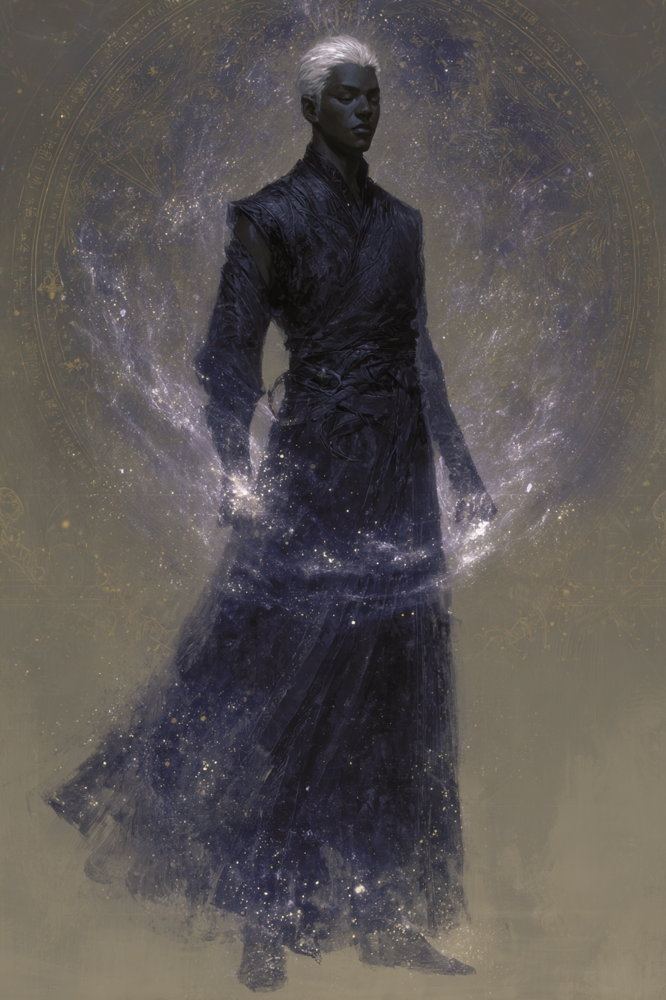
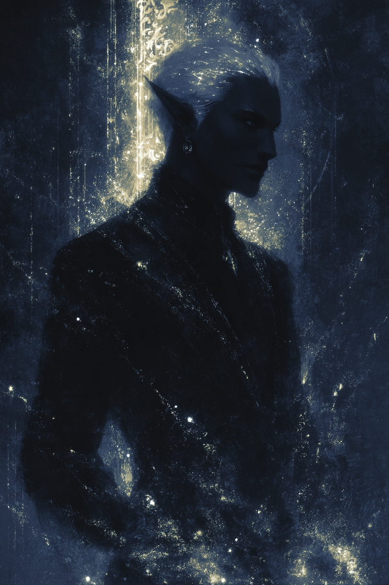

Fate
Unexpected help approaches from outside the expected pattern; the story opens with intervention and guidance rather than isolation.
Half-Drow • Sorlock • Great Old One / Sorcerer
Built from an eight-card Citadel Oracle reading and a three-card magic spread, this chronicle tracks a watchful, theatrical half-drow whose power comes through defiance, revelation, and the dangerous refusal to stay still.

Identity

At his core he is disciplined, self-possessed, and dangerous in a way that looks almost elegant. He survives by preparation, performs certainty as armor, and gradually becomes the kind of person who stands in the gap for others once he stops hiding behind precision.
Oracle spread
The deck produced a character defined by readiness, concealment, strategic planning, self-fashioned power, expressive presence, destabilizing change, failed patience, and eventual advocacy.
Unexpected help approaches from outside the expected pattern; the story opens with intervention and guidance rather than isolation.
He acts when protection is required. His discipline is not aggression but readiness, conviction, and the refusal to flinch.
Secrets and surveillance protect him, but they also destabilize trust. Hidden information has become both method and prison.
He was shaped by danger and now maps every room, route, and possible failure before he commits to movement.
He claims what he needs instead of waiting for permission. His magic feels seized, bargained for, or stolen from a structure that never meant to offer it freely.
What the world sees is beauty under control: theatrical, deliberate, charismatic, and entirely unwilling to apologize for taking up space.
He cannot tolerate stagnation. When systems fail, he breaks them, then bears the cost of what change actually destroys.
He knows patience matters and overrides it anyway. The deeper block is not ignorance, but avoidance and urgency colliding.
His story points toward defense and advocacy. Once he chooses a cause, he does not half-commit.
Magic spread
The ritual form remains, but belief is fractured. He knows the language of power even where faith has been stripped from it.
Every use of magic reveals something that cannot be unseen. Clarity itself becomes the tax.
His magic is witness before weapon. It names the truth and turns observation into force.
Warlock 7 / Sorcerer 5 keeps the Great Old One identity central while preserving Metamagic as the expression of precision and control.
Ability profile
| Ability | Score | Reading |
|---|---|---|
| Charisma | 16–17 | The social and magical center of the build; where the Dancer lives. |
| Intelligence | 14 | Cartographer origin and Spymaster shadow; reads rooms and patterns. |
| Dexterity | 14 | Half-drow agility, grace, and practiced survival instinct. |
| Constitution | 13 | Enough endurance to maintain concentration when things turn ugly. |
| Wisdom | 10–11 | Average judgment, often overridden by urgency and self-directed pressure. |
| Strength | 8 | Not built for blunt force; danger comes through poise and spellcraft. |
Visual language
Silver hair, charcoal skin, pale eyes, and a silhouette defined more by stillness than bulk. The look is severe enough to become beautiful, and beautiful enough to make the danger feel chosen.
Chronicle log
This section is ready for session updates. Add one entry per major rest, revelation, betrayal, or decision point to let the page become a living dossier.
He enters a place already measuring exits, alliances, and leverage, trying to control the terrain before the terrain can define him.
Every spell reveals something. The awakening is not optional; only the response is.
By Act 3, the performance falls away and advocacy stops being theoretical. Protection becomes identity.